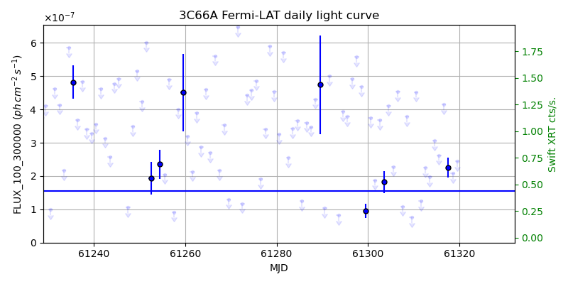
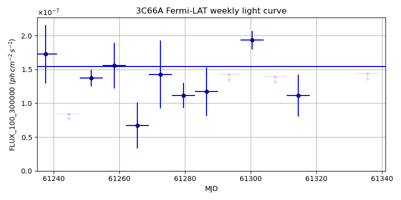
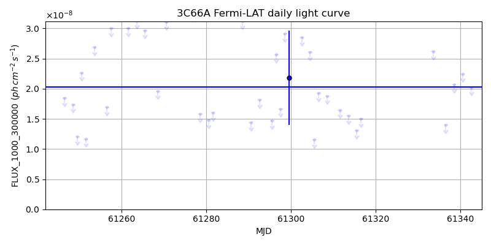
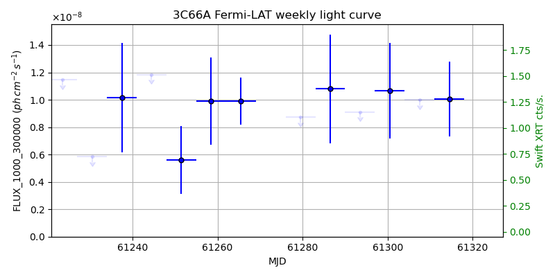

LAT Lightcurve site: https://fermi.gsfc.nasa.gov/ssc/data/access/lat/msl_lc/source/3C_66A
NED: Query
Time of last update of this page: UT: 2026-10-30 15:12 (MJD: 61343.634)
| Property | Value |
|---|---|
| R.A. | 2:22:39.60 |
| Dec. | 43:02:06.0 |
| z | 0.370 |
| 3FGL SpectrumType | LogParabola |
| 3FGL PL Index | |
| 3FGL Flux_100_300000 | 1.54e-07 1 / (s cm2) |
| 3FGL Flux_1000_300000 | 2.02e-08 1 / (s cm2) |
| 3FGL Flux >200 GeV | 9.90e-11 1 / (s cm2) |
| 3FGL Extrap. Crab >200 GeV | 0.42 |
| 3FGL Flux After EBL Absorption >200GeV | 2.24e-11 1 / (s cm2) |
| 3FGL EBL Crab Fraction >200GeV | 0.10 |

| MJD | dMJD | Flux | dFlux | Frac3FGL | FracCrab>200GeV | EBLFracCrab>200GeV |
|---|---|---|---|---|---|---|
| 61338.50 | 0.50 | 2.13e-07 | 0.00e+00 | 0.00 | 0.00 | 0.00 |
| 61339.50 | 0.50 | 1.46e-07 | 0.00e+00 | 0.00 | 0.00 | 0.00 |
| 61340.50 | 0.50 | 3.70e-07 | 0.00e+00 | 0.00 | 0.00 | 0.00 |
| 61341.50 | 0.50 | 2.91e-07 | 0.00e+00 | 0.00 | 0.00 | 0.00 |
| 61342.50 | 0.50 | 4.34e-07 | 0.00e+00 | 0.00 | 0.00 | 0.00 |

| MJD | dMJD | Flux | dFlux | Frac3FGL | FracCrab>200GeV | EBLFracCrab>200GeV |
|---|---|---|---|---|---|---|
| 61307.50 | 3.50 | 1.39e-07 | 0.00e+00 | 0.00 | 0.00 | 0.00 |
| 61314.50 | 3.50 | 1.11e-07 | 3.11e-08 | 0.72 | 0.30 | 0.07 |
| 61321.50 | 3.50 | 2.38e-07 | 0.00e+00 | 0.00 | 0.00 | 0.00 |
| 61328.50 | 3.50 | 7.12e-07 | 0.00e+00 | 0.00 | 0.00 | 0.00 |
| 61335.50 | 3.50 | 1.44e-07 | 0.00e+00 | 0.00 | 0.00 | 0.00 |

| MJD | dMJD | Flux | dFlux | Frac3FGL | FracCrab>200GeV | EBLFracCrab>200GeV |
|---|---|---|---|---|---|---|
| 61338.50 | 0.50 | 2.07e-08 | 0.00e+00 | 0.00 | 0.00 | 0.00 |
| 61339.50 | 0.50 | 4.56e-08 | 0.00e+00 | 0.00 | 0.00 | 0.00 |
| 61340.50 | 0.50 | 2.25e-08 | 0.00e+00 | 0.00 | 0.00 | 0.00 |
| 61341.50 | 0.50 | 4.12e-08 | 0.00e+00 | 0.00 | 0.00 | 0.00 |
| 61342.50 | 0.50 | 2.02e-08 | 0.00e+00 | 0.00 | 0.00 | 0.00 |

| MJD | dMJD | Flux | dFlux | Frac3FGL | FracCrab>200GeV | EBLFracCrab>200GeV |
|---|---|---|---|---|---|---|
| 61307.50 | 3.50 | 9.99e-09 | 0.00e+00 | 0.00 | 0.00 | 0.00 |
| 61314.50 | 3.50 | 1.00e-08 | 2.72e-09 | 0.50 | 0.21 | 0.05 |
| 61321.50 | 3.50 | 2.00e-08 | 0.00e+00 | 0.00 | 0.00 | 0.00 |
| 61328.50 | 3.50 | 3.23e-08 | 0.00e+00 | 0.00 | 0.00 | 0.00 |
| 61335.50 | 3.50 | 1.59e-08 | 0.00e+00 | 0.00 | 0.00 | 0.00 |
--------------------------------------------------------- Using user-supplied coords: 2:22:39.60 43:02:06.0 2000 --------------------------------------------------------- FLWO UT night of: 2026-10-31 Local Sid. @ Midnight: 02:14 Sunset (-15.0) (local, UT): 18:44 01:44 Sunrise (-15.0) (local, UT): 05:31 12:31 Moonrise (local, UT): 21:49 04:49 Moonset (local, UT): Moon phase: 0.68 --------------------------------------------------------- AzTime LSID UT Obj_el Obj_az Mn_el Mn_az Sep. --------------------------------------------------------- 18:44 20:57 01:44 26.7 53.9 -27.0 28.6 59.0 19:14 21:27 02:14 32.0 55.8 -23.9 34.8 59.3 19:44 21:57 02:44 37.3 57.3 -20.2 40.4 59.6 20:14 22:27 03:14 42.7 58.4 -16.1 45.6 59.9 20:44 22:58 03:44 48.2 58.9 -11.6 50.4 60.2 21:14 23:28 04:14 53.7 58.8 -6.7 54.8 60.5 21:44 23:58 04:44 59.1 57.7 -0.9 58.8 60.8 22:14 00:28 05:14 64.4 55.1 3.8 62.5 61.1 22:44 00:58 05:44 69.5 49.8 9.2 66.0 61.3 23:14 01:28 06:14 74.1 39.9 14.8 69.3 61.5 23:44 01:58 06:44 77.4 22.1 20.6 72.5 61.8 00:14 02:28 07:14 78.5 356.1 26.5 75.5 62.0 00:44 02:58 07:44 76.7 331.8 32.5 78.6 62.2 01:14 03:28 08:14 72.9 316.6 38.5 81.7 62.4 01:44 03:58 08:44 68.1 308.3 44.7 84.9 62.6 02:14 04:28 09:14 62.9 304.0 50.8 88.3 62.8 02:44 04:59 09:44 57.6 301.8 57.0 92.2 63.0 03:14 05:29 10:14 52.1 301.1 63.2 97.0 63.2 03:44 05:59 10:44 46.6 301.2 69.3 103.5 63.4 04:14 06:29 11:14 41.2 301.9 75.2 113.7 63.5 04:44 06:59 11:44 35.8 303.1 80.4 133.8 63.7 05:14 07:29 12:14 30.5 304.7 83.0 177.6 63.9 05:31 07:46 12:31 27.5 305.8 82.2 206.9 64.0 --------------------------------------------------------- Dark hours >55 deg.: 0.45 srcstart (UT): 2026-10-31 04:21 srcend (UT): 2026-10-31 04:48